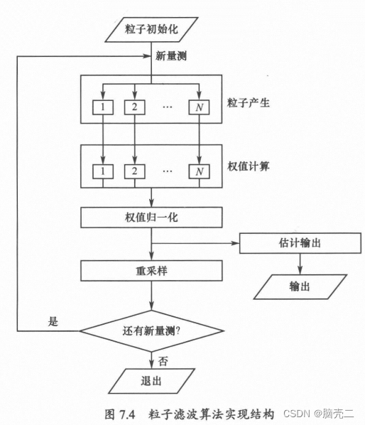
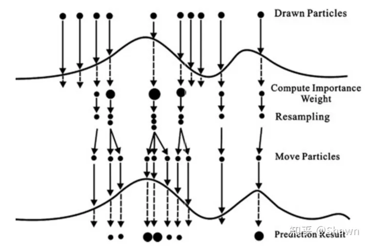
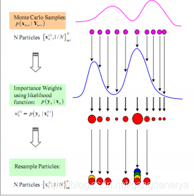

PF粒子滤波器
Table of Contents
背景
对于一般的非线性/非高斯系统,解析求解的途径是行不通的。在数值近似方法中，蒙特卡罗仿真是一种最为通用、有效的手段，粒子滤波就是建立在蒙特卡罗仿真基础之上的，它通过利用一组带权值的系统状态采样来近似状态的统计分布。由于蒙特卡罗仿真方法具有广泛的适用性，由此得到的粒子滤波算法也能适用于一般的非线性/非高斯系统。但是，这种滤波方法也面临几个重要问题，如有效采样(粒子)如何产生、粒子如何传递以及系统状态的序贯估计如何得到等。
简单的理解，粒子滤波就是使用了大量的随机样本，采用 蒙特卡洛(MonteCarlo，MC)仿真技术完成 贝叶斯递推滤波 (Recursive Bayesian Filter) 过程。
推导
系统描述
对于一个离散的开环系统
$$ x_k=Ax_{k-1}+Gw_{k-1}\\z_k=Cx_k+Hv_k $$其中 $x_k$ 为 k 时刻的系统状态向量， $z_k$ 为 k 时刻的测量输出向量，这里是一个开环系统，不考虑系统的输入 $u$。 $w_k,v_k$ 分别是系统过程噪声和观测噪声，并且均为零均值高斯白噪声。犹豫贝叶斯滤波的递推形式是基于非线性系统的后验概率密度，因此这里并不需要假设噪声均为零均值白噪声。但是对于 KF，EKF，CKF，QKF 等需要假设过程噪声和测量噪声均为零均值高斯白噪声。因此基于贝叶斯滤波的粒子滤波可以处理非线性非高斯的状态估计问题。
定义 $1\sim k$ 时刻的 $x_k$ 的所有测量数据为
$$ z_{1:k}=\begin{bmatrix}z_1^T&z_2^T&...&z_k^T\end{bmatrix}^T $$贝叶斯滤波问题就是计算 k 时刻状态 x 估计的置信程度，为此构造概率密度函数 $p(x_k|z^k)$ ，在给定初始分布 $p(x_0|z^0)=p(x_0)$ 之后，从理论上看，可以通过预测和更新两个步骤递推得到概率密度函数 $p(x_k|z^k)$ 的值，有点 KF 的样子。
递推贝叶斯滤波
-
预测步： $p(x_{k-1}|y_{1:k-1})→p(x_k|y_{1:k-1})$
$$ p(x_k|y_{1:k-1})=\int{p(x_k|x_{k-1})p(x_{k-1}|y_{1:k-1})dx_{k-1}} $$ -
更新步： $p(x_k|y_{1:k-1})→p(x_k|y_{1:k})$，根据观测到得数据 $y_k$ 来更新数据
$$ p(x_k|y_{1:k})=\frac{1}{y_k}{p(x_k|x_{k})p(x_{k}|y_{1:k-1})dx_{k-1}}\\y_k=\int{p(y_k|x_k)p(x_k|y_{1:k-1})dx_k} $$ -
基于 $p(x_k|y_{1:k})$
实际上各种滤波，估计就是求解 $p(x_k|y_{1:k})$ 的一阶矩（ $x_k$ 的估计）以及二阶矩（估计的协方差）
上述的更新步公式描述了由 $k − 1$ 时刻后验概率密度函数向 $k$ 时刻后验概率密度函数递推的完整过程，从而构成了贝叶斯估计最优解的通用表示形式。进而通过后验分布 $p(x_k|z_{1:k})$ 可以得到不同准则条件下 x 的最优估计计划。
例如：
-
最小均方误差MMSE估计为
$$ \hat{x}_k=E(x_k|z_k)=\int{x_kp(x_k|z_{1:k})}dx_k $$ -
最大后验MAP估计为
$$ \hat{x}_k=\arg\underset{x_k}{\min}~p(x_k|z_{1:k}) $$
实际上粒子滤波就是基于蒙特卡洛技术，将上述递推的过程用大量采样的方式实现了
-
标准的粒子滤波PF
核心思想是使用一组具有相应权值的随机样本(粒子)来表示状态的后验分布。
该方法的基本思路是选取一个重要性概率密度并从中进行随机抽样，得到一些带有相应权值的随机样本后，在状态观测的基础上调节权值的大小和粒子的位置，再使用这些样本来逼近状态后验分布，最后将这组样本的加权求和作为状态的估计值。粒子滤波不受系统模型的线性和高斯假设约束，采用样本形式而不是函数形式对状态概率密度进行描述，使其不需要对状态变量的概率分布进行过多的约束，因而在非线性非高斯动态系统中广泛应用。尽管如此，粒子滤波目前仍存在计算量过大、粒子退化等关键问题亟待突破。
粒子滤波实际上是上述基于递推贝叶斯滤波的 MMSE 估计的近似实现，而近似方法就是蒙特卡洛方法。
通常选择先验分布作为重要性密度函数，即
$$ q(x_k|x_{k-1}^{i},z_k)=p(x_k|x_{k-1}^i) $$对该函数取重要性权值为
$$ w_k^i=w_{k-1}^ip(y_k|x_k^i) $$该权值需要归一化为 $\overline{w}_k^i$
步骤

- 根据 $p(x_0)$ 采样得到 N 个粒子 $x_0^i\sim p(x_0)$
- 根据状态转移函数产生新的粒子为 $x_k^i\sim p(x_k|x_{k-1}^i)$
- 计算重要性权值 $w_k^i=w_{k-1}^ip(y_k|x_k^i)$
- 归一化重要性权值 $\overline{w}_k^i=\frac{w_k^i}{\sum_{j=1}^Nw_k^j}$
- 使用重采样方法对粒子进行重采样
- 得到 k 时刻的后验状态估计 $E(\hat{x}_k)=\sum_{i=1}^Nx_k^i\overline{w}_k^i$
重采样
重采样机制是指对于权重较大的粒子序列进行复制，对于权重较小的粒子序列进行抛弃，通过重采样后，我们获得N个权重相等的粒子序列。通过重采样，我们可以避免之前重要性采样中由于权重迭代次数过多导致部分粒子权重很小，部分粒子权重很大的问题。重采样方法主要有系统重采样、残差重采样、多项式重采样等。为了减少计算量我们同时还引入了自适应重采样机制


-
系统重采样，将 $(0,1)$ 区间均匀分为 N 份，并将所有粒子按照权重依次进行累加，对于累加后跨过 n 个区间分界点的粒子复制 n 份，对于跨国 0 个区间分类点的粒子抛弃，步骤如下
- 在均匀分布 $U(0,1/N)$ 中采样 $U_0$
- 按照公式 $U_i=U_0+\frac{i-1}{N}$ 计算 N 个分界点
- 计算每个粒子采样次数 $N_i=\sum_{k=1}^{i-1}w_k\leq U_i\leq \sum_{k=1}^iw_k$
-
多项式重采样
另一种常用的方法是多项式重采样，多项式重采样算法首先利用重采样之前的粒子权值集合组成一个多项式分布即 $Mult(N;w_k(1),w_k(2),…,w_k(N))$，并从该多项式分布中抽样 N 次得到 N 个序号（其中每个序号取值为 0-N 之间的整数），然后，对应序号的粒子复制到一个新粒子集合中，该新粒子集合就是重采样后得到的粒子集合
-
自适应重采样
在序列重要性采样中，我们引入重采样机制是为了解决粒子权重退化的问题，但是目前我们使用的方法是在每一代都进行重采样，这种重采样方法时间复杂度比较高，我们希望能够缩减重采样的次数，只在必要时进行重采样，这就是自适应重采样的思想。自适应重采样需要实现规定一个有效粒子的阈值，例如采样N个粒子，规定有效粒子大于 Neff 时不进行重采样，小于 Neff 时通过系统重采样等方法进行重采样。这个阈值通常根据研究问题所选定。
重采样步骤
- t = 0 时刻
- 初始化得到 N 个粒子 $x_0$
- 计算 $x_0$ 对应的权重 $w(x_0)$
- 根据权重进行重采样
- 获取 N 个权重相等的粒子
- t > 0 时刻
- 从提议分布 $q(x_t|x_{1:t-1})$ 中进行采样
- 计算 $x_t$ 对应的权重 $w(x_t)$
- 根据就权重进行重采样
- 获取 N 个权重相等的粒子
一篇博客彻底掌握：粒子滤波 particle filter (PF) 的理论及实践（matlab版）_粒子滤波 matlab-CSDN博客